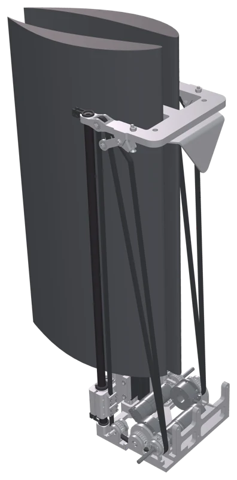
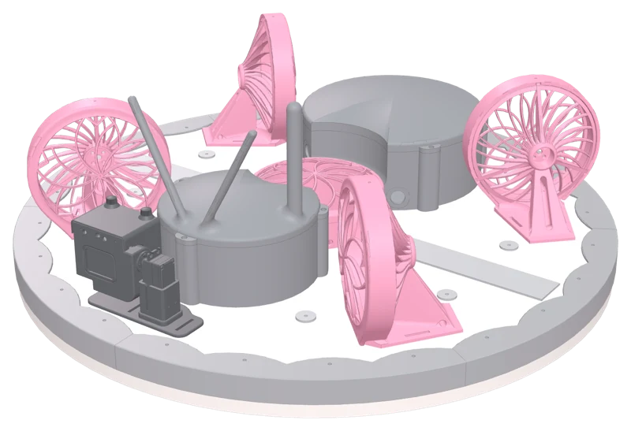
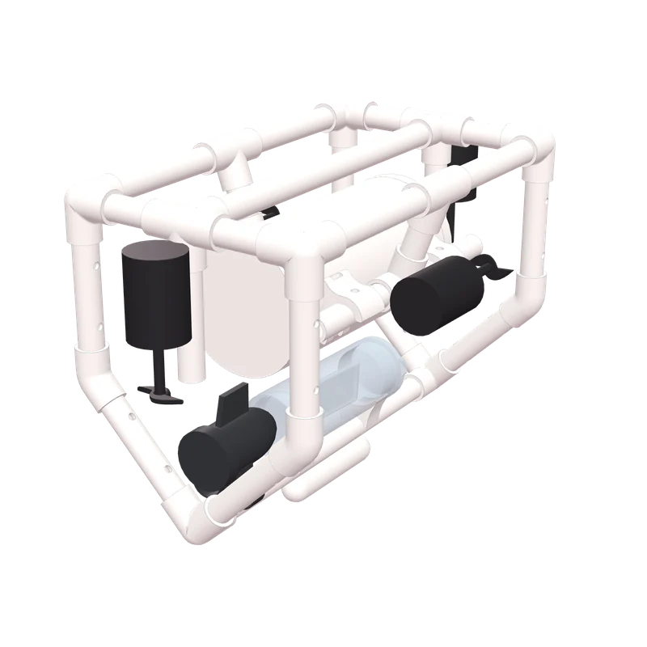
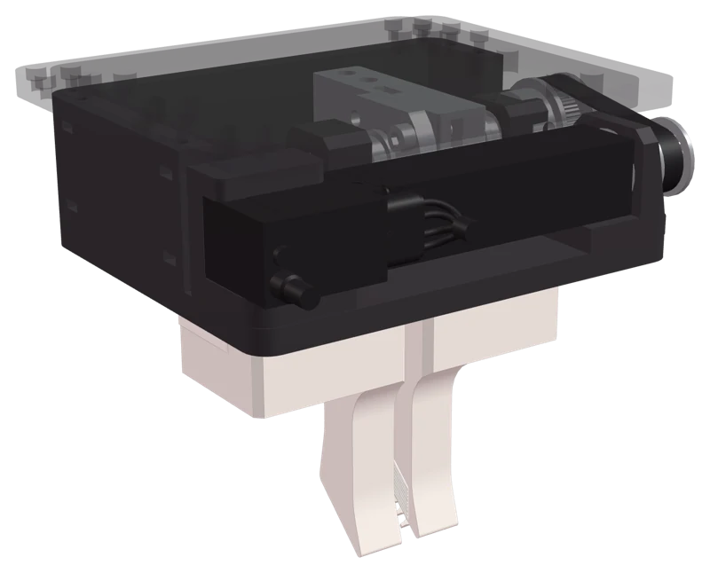
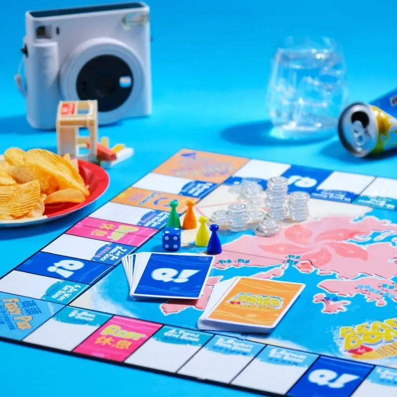
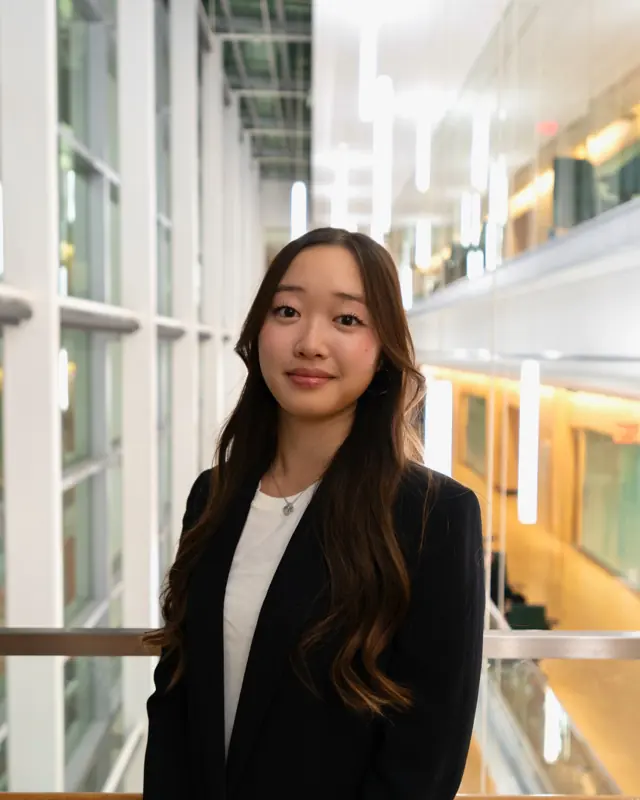

Mechanical Engineering, University of Michigan
Hinako Nishi
Mechanical engineering student focused on product design, from first sketch to working hardware.
I study Mechanical Engineering at the University of Michigan, with a minor in Mathematics, and I’m a Mechanical Engineer on the University of Michigan Solar Car Team. My work runs from first concept to tested prototype, and I’m drawn to product design, robotics and drones.
Projects
Solar Car Dual Wing System · University of Michigan Solar Car Team
A dual static-cambered wing system for a solar car.
A motorized elevator raises whichever wing suits the wind so it helps push the car forward. As Wing Mechanical Engineer, I designed the layout and the mechanism that raises each wing in 7 seconds.
See the project ›
Amphibious Inspection Hovercraft · Japan Infra Waymark
An amphibious hovercraft for bridge inspection.
It crosses grass, gravel, water and gentle slopes. I designed and built it over three prototypes, reaching 3.5 kg of lift at half throttle.
See the project ›
Underwater ROV · University of Michigan
An underwater ROV for offshore wind inspection.
Testing Lead on a five-person team. The full build cost $256, and it finished the riser inspection in 14 of the 30 minutes allowed.
See the project ›
Robotic gripper · TransGP
Designed for the camera as much as the grasp.
Four hardware revisions of a two-finger gripper for garment handling, 40% smaller by the last one.
See the project ›
Beach Board Hong Kong · Founder
An educational board game on Hong Kong’s beach pollution.
Built with A Plastic Ocean Foundation and sold at the M+ museum shop.
See the project ›

About me
I’m a junior at the University of Michigan studying Mechanical Engineering with a minor in Mathematics. I learn best by building.
Interested in
- RoboticsField robots, grippers and competition robots
- DronesFlight control, propulsion and lift systems
- Product designDesigning hardware people use, from sketch to prototype
- 2026–
- Wing Mechanical Engineer, University of Michigan Solar Car Team
- 2026
- Mechanical Engineering Intern, Japan Infra Waymark
- 2025
- Testing Lead, Underwater ROV, University of Michigan
- 2024
- Research Intern, Centre for Transformative Garment Production
- 2023–25
- Drive Team Captain, FIRST Team 9421